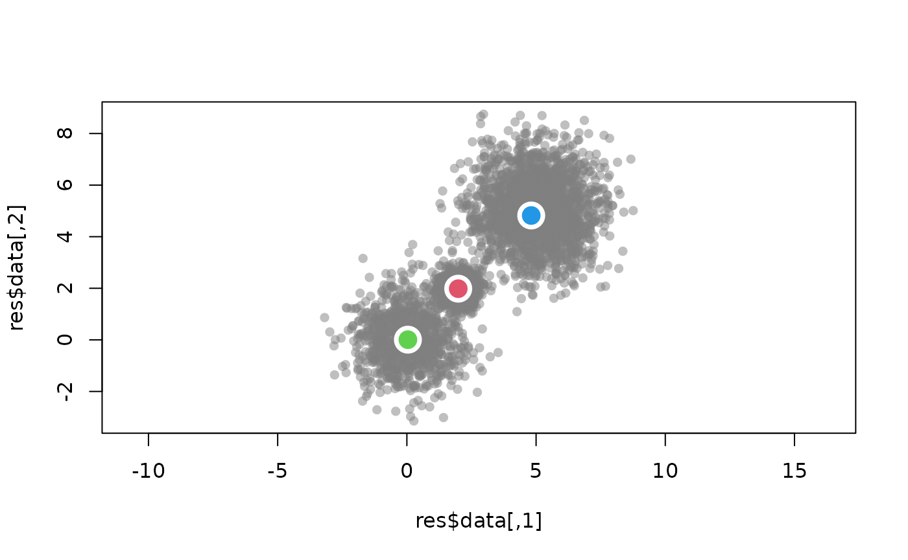
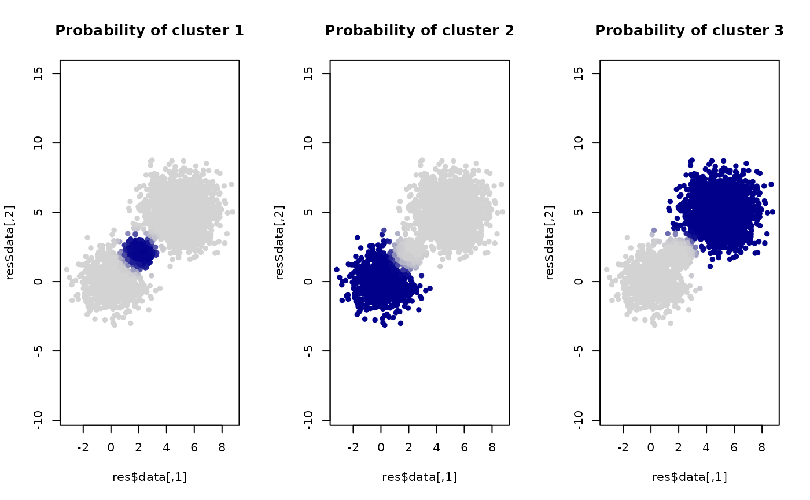
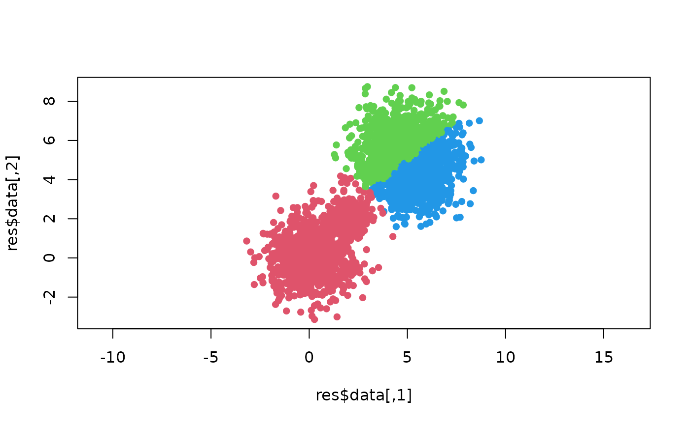

Small demo
Kevin Lin
2026-04-01
UWBiost561.RmdThis is a demo vignette for our package. We will generate 2-dimensional data that is a mixture of 3 Gaussians, and then use an EM algorithm to estimate a clustering of the data.
The following lines of code runs the entire example (simulating the data, running the EM algorithm, and computing the probabilities that each sample is drawn from each Gaussian cluster).
library(UWBiost561)
set.seed(10)
res <- UWBiost561::run_example()Interpreting the EM results
Now let’s plot the data with the estimated means marked on the plot.
graphics::plot(res$data,
col = rgb(0.5,0.5,0.5,0.5),
pch = 16,
asp = T)
for(i in 1:3){
mean_vec <- res$em_results$means[i,]
graphics::points(x = mean_vec[1],
y = mean_vec[2],
cex = 3,
col = "white",
pch = 16)
graphics::points(x = mean_vec[1],
y = mean_vec[2],
cex = 2,
col = i+1,
pch = 16)
}
We can also plot based on the (estimated) probability each sample originates from each of the clusters.
par(mfrow = c(1,3))
color_palette <- grDevices::colorRampPalette(c("lightgray", "darkblue"))(50)
break_value <- seq(0, 1, length.out = 50)
for(i in 1:3){
probability_vec <- res$probabilities[,i]
color_vec <- sapply(probability_vec, function(x){
color_palette[which.min(abs(x - break_value))]
})
graphics::plot(res$data,
col = color_vec,
pch = 16,
asp = T,
main = paste("Probability of cluster", i))
}
Comparing against K-means clustering
EM via Gaussian mixture model is often known as “soft clustering.” We can do a simple comparison against K-means, which is sometimes called a “hard clustering.”
set.seed(10)
kmean_res <- stats::kmeans(res$data, centers = 3)
graphics::plot(res$data,
col = kmean_res$cluster+1,
pch = 16,
asp = T)